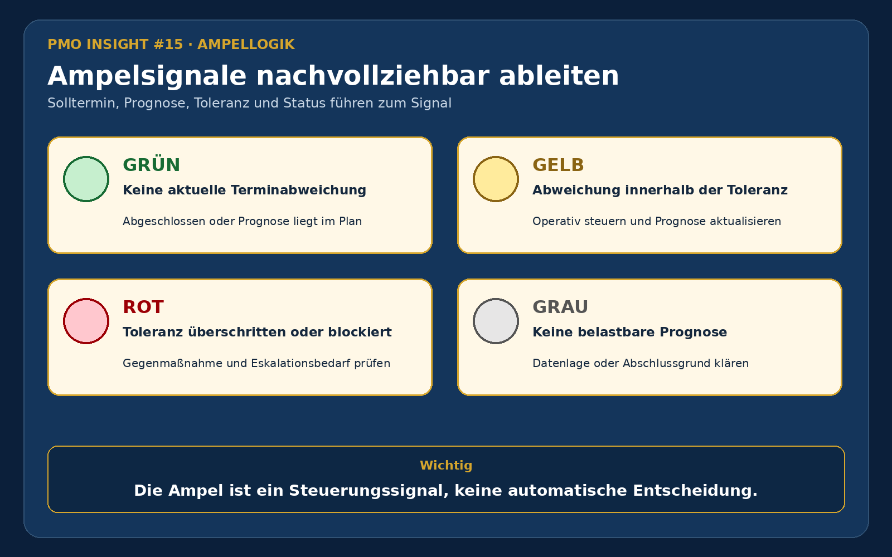
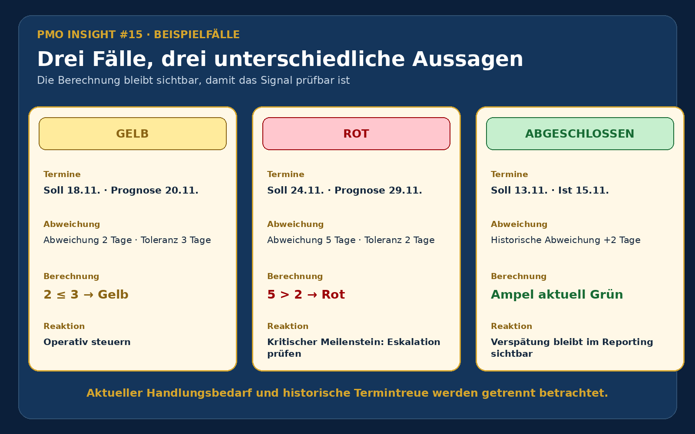
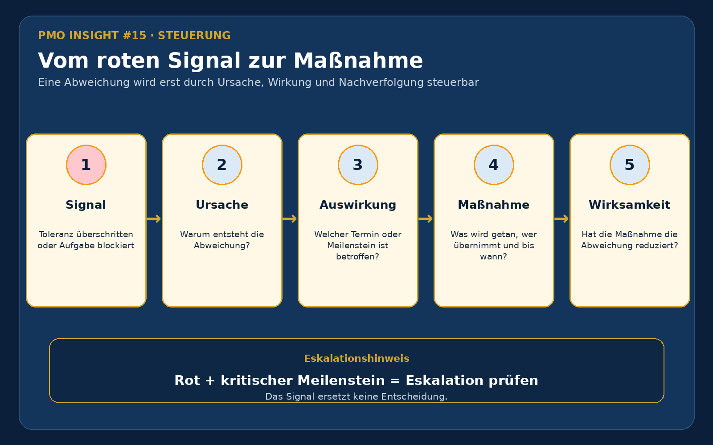

„Freigabe noch offen.“
Der Zustand ist benannt. Der weitere Bearbeitungsweg bleibt unklar.
PMO Insight #15 · PMO-Steuerung · Rollenklärung · Dokumentation
„Freigabe noch offen“ beschreibt einen Zustand. Diese Seite zeigt zuerst den fachlichen Gedankengang und anschließend die praktische Umsetzung in einer PMO-Arbeitsprobe.
Die Formulierung zeigt, dass eine Voraussetzung noch nicht erfüllt ist. Sie zeigt aber nicht, wer handeln muss, welche Auswirkung besteht, bis wann eine Klärung benötigt wird oder was bei weiterer Verzögerung geschieht.
Der Zustand ist benannt. Der weitere Bearbeitungsweg bleibt unklar.
Projektbeteiligte erkennen, wer was bis wann klärt und wann eine Entscheidung notwendig wird.
Ein offener Punkt wurde erkannt und dokumentiert. Damit ist noch nicht geklärt, wie er bearbeitet wird.
Der Sachverhalt ist sichtbar.
Der Zustand ist verständlich formuliert.
Handlung, Termin und Eskalation fehlen.
Im Websitebeispiel kann sich die Einordnung mit dem tatsächlichen Zustand verändern. Das ist ein möglicher Verlauf, kein allgemeingültiger Lebenszyklus.
Innerhalb der Frist hängt die Veröffentlichung von einem vorgesehenen Prüfschritt ab.
Eine mögliche Verzögerung könnte den Termin gefährden.
Die Prüffrist ist überschritten oder der Termin konkret gefährdet.
Vertretung einbinden, Termin verschieben oder anders priorisieren?
Welcher Sachverhalt ist konkret ungeklärt?
Was wird behindert oder verzögert?
Wer hält Status, Frist und Rückmeldung nach?
Welche konkrete Handlung folgt?
Wann wird die Klärung benötigt?
Wann und an wen wird eskaliert?
Verfolgt Status, Frist, Handlung und Eskalationsauslöser.
Beurteilt Inhalt, Kontext und fachliche Richtigkeit.
Erteilt eine verbindliche Freigabe oder Ablehnung.
Entscheidet bei Zielkonflikt oder Terminänderung.
Ausgangslage: Ein Websitebeitrag ist redaktionell fertig. Vor der Veröffentlichung fehlt die fachliche Freigabe.
Keine Rollentrennung, Handlung, Frist oder Eskalationsregel.
Das PMO muss die fachliche Frage nicht selbst beantworten. Es sorgt dafür, dass sichtbar bleibt, was offen ist, welche Auswirkung besteht, wer beitragen muss, wer entscheiden darf und wann Unterstützung notwendig wird.
Steuerung bedeutet für mich nicht, jede Antwort selbst zu kennen. Es bedeutet, die richtige Frage mit Verantwortung, Handlung und Termin zu verbinden.
Der Gedankengang wird im Mini-Fall in konkrete PMO-Artefakte übertragen.
| ID | Vorgang oder Meilenstein | Dauer | Vorgänger | Rolle | Status |
|---|---|---|---|---|---|
| 1 | Websitebeitrag erstellen | 2 AT | – | Redaktion | Erledigt |
| 2 | Meilenstein: redaktionell fertig | 0 AT | 1 FS | Redaktion | Erreicht |
| 3 | Fachliche Prüfung durchführen | 2 AT | 2 FS | Fachrolle | Offen |
| 4 | Meilenstein: Freigabe erteilt | 0 AT | 3 FS | Freigaberolle | Offen |
| 5 | Websitebeitrag veröffentlichen | 0,25 AT | 4 FS | Webteam | Wartet |
AT = Arbeitstag, FS = Ende-Anfang-Beziehung.
Veröffentlichung hängt von Freigabe ab.
Prüffrist überschritten, Termin gefährdet.
Vertretung oder Terminverschiebung?
Prüfung innerhalb der Frist.
Termin gefährdet, Maßnahme wahrscheinlich wirksam.
Termin ohne Entscheidung nicht mehr haltbar.
Den Praxisfall habe ich in einer internen Excel-Arbeitsmappe weiterentwickelt. Sie verbindet Solltermin, Prognosetermin, Ist-Ende, individuelle Toleranz, automatische Ampellogik, Eskalationshinweis und Maßnahmenverfolgung.
Die Excel-Datei bleibt bewusst eine interne Lern- und Entwicklungsunterlage. Im Portfolio zeige ich stattdessen die Logik und drei durchgerechnete Beispiele als Bilder.


